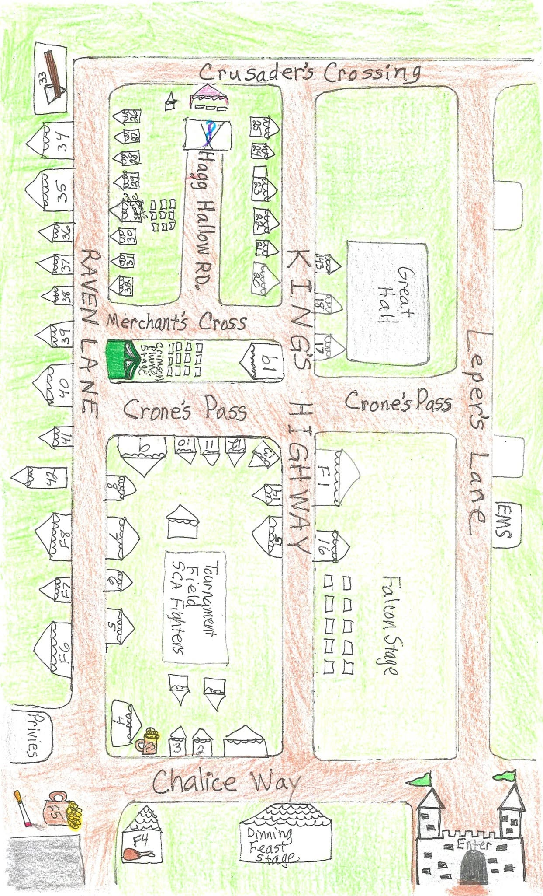
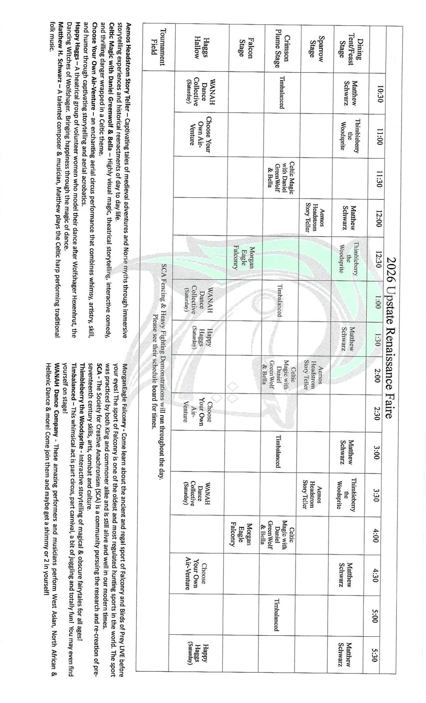

🌤️ Live Hourly Weather
🗺️ Interactive Official Map
The hand-drawn map stays untouched underneath. I replaced the bad large pins with small clickable booth-number overlays placed over the actual numbered tents. Tap a booth such as 6 to see its vendor.

The overlay is based on the printed booth numbers on your original map; it does not redraw or move roads, tents, or stages.
Open original mapReadable schedule imageOriginal vendor sheet
{kind=link}
{kind=link}
🎭 Full Saturday Schedule
All 29 printed Saturday performance times from your supplied schedule are included below. Repeated performances are the backup times. Official show lengths are not published in the schedule or current Faire coverage, so I do not invent durations; where shows are only 30 minutes apart, plan on leaving a few minutes early if you need to cross the grounds.
SCA Tournament Field: fencing and heavy-fighting demos run during the day; the printed schedule says to see their on-site board for times.
⭐ Preferred Route + Location + Travel Buffer
Walking times are planning buffers, not official measurements. The grounds are compact; I am budgeting about 3–5 minutes for nearby stages and 5–8 minutes when crossing the center of the map.
- 10:30 — WANAH Dance CollectiveHaggs Hallow • Backup: 1:00, 3:30 • Then allow ~5–8 min to Dining/Feast.
- 11:00 — Thimbleberry the WoodspriteDining / Feast Stage, Chalice Way near entrance • Backups: 12:30, 3:30 • ~5–8 min to Crimson Plume.
- 11:30 — Celtic Magic w/ Daniel GreenWolf & BellaCrimson Plume Stage, Merchant's Cross / King's Highway • Backups: 2:00, 4:00 • ~3–5 min toward Sparrow area.
- 12:00 — Aemos Headstrom Story TellerSparrow Stage • Backups: 2:00, 3:30 • Allow ~5 min to Falcon Stage.
- 12:30 — Morgan Eagle FalconryFalcon Stage / Falconry area • Only backup: 4:00.
- 1:30 — Happy HaggsHaggs Hallow • Backup: 5:30 • Allow ~3–5 min back toward Raven Lane food.
- 2:00 — Food stopHocus Smokus BBQ F6 + Freddy's Rockin' Lemonade F7 on Raven Lane.
- 2:30 — Choose Your Own Air-VentureHaggs Hallow • Other times: 11:00, 4:30.
- 3:00 — TimbalancedCrimson Plume Stage • Other times: 10:30, 1:00, 5:00.
- 3:15+ — Vendor / drink wanderDragonfyre Distillery booth 4 by Tournament Field / Chalice Way; Awestruck Ciders F3 nearby on the map.
Important: because official performance durations are not stated, a 10:30 show followed by an 11:00 show across the grounds could be tight if the first runs a full 30 minutes.
🛍️ Vendors
📅 Schedule Image — Upright View
This is your original Schedule.jpg displayed rotated 90° so it is readable on the page. The raw JPG in Git remains untouched as the original source.

📌 Faire Info
- Chenango County Fairgrounds, 168 E Main St, Norwich, NY.
- 10 AM–6 PM, rain or shine.
- Adults $17; kids 6–13 $15; 5 and under free.
- Firefighters, police, EMS & nurses: $10 with valid agency ID.
- Veterans / active duty: special discount with ID.
- Free parking; re-entry with stamp.
- Credit cards accepted at gate; many vendors cash-only; no ATM.
- Costumes encouraged. Costume weapons must be peace-tied/sheathable and are checked at the gate.